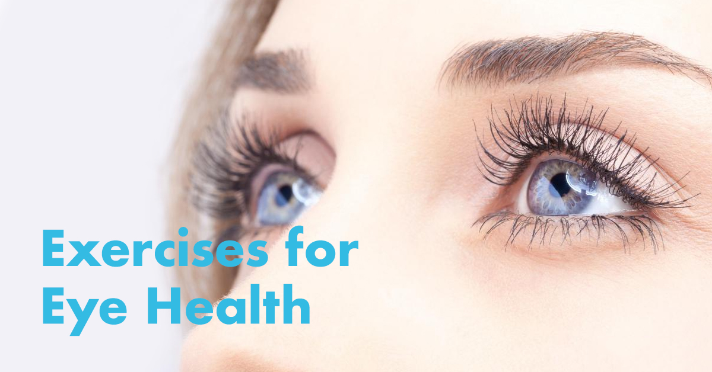

These are the Best Exercises for Your Eyes | WhatisDryEye.com
2020.12.07 12:35
Want Clinically Backed Eye Care Tips FREE + $10 Off Coupon?
Yes, Sign me up!Great Choice! You'll love these clinically backed tips to take your knowledge to the next level. You'll learn such things as:
- How to identify symptoms you never thought were related to your eye condition
- How much your heart and eye health are related
- How to treat your own eye conditions, such as dry eye, at home
- Why there is hope for even the most stubborn symptoms!
These amazing tips make it easy for you to take control of your eyes and start feeling great again today!
Top 10 Ways to Quickly Treat Dry Eye Syndrome.
Are Yours FREE Right Now!
Backed by clinical data and years of experience, you can now unlock the same methods thousands of others are now using to relieve their dry eye symptoms.
These 10 quick ways make it easy for you to take control of your eyes and start feeling great again as quickly as today!
Omega-3, Omega-7, Lutein, Vitamin D3 Decreases Eye Inflammation Relieves Dry Itchy Eyes Promotes Tear Production Reduces C-Reative Protein Levels Your Best Resource for Dry Eye and Macular Degeneration Education Home About Us/Disclosure Contact Us WhatisDryEye.com Treatments Preservative-Free Drops Omega-3 Fish Oils Warm vs Cool Compress Benefits of Lutein Vitamin D Best Eye Drops Best Eye Vitamins Vitamin Supplements Artificial Tears + Side Effects Tests for Dry Eye Best Medications Natural Remedies Homeopathic Restasis Xiidra vs Restasis Best Eye Exercises Benefits of Blinking Symptoms Dry Eye Symptoms Dry Eye Causes Dry Eye F.A.Q Dry Eye Facts Types of Dry Eye Tired Eyes Dry Itchy Eyes Blurry Vision Menopause Eyes Are Sensitive To Light Pain in My Eyes Watering Eyes Eyes Hurt When Blinking Sticky Eyes Burning Eyes Eye Strain Computer Eye Strain Conditions Computer Vision Syndrome Meibomian Gland Dysfunction Sjogren’s Syndrome Macular Degeneration Autoimmune Diseases Keratitis Menopause Pink Eye Glaucoma Rheumatoid Arthritis Lupus High Cholesterol Conjunctivitis Blepharoplasty Hot Topics What is Omega-7 Supplement Dry Eye and Lasik Are We All Going Blind? (INFOGRAPHIC) Screen Time & Kids [INFOGRAPHIC] Myopia in Kids Dangers of Blue Light Cataract Surgery Treatments Preservative-Free Drops Omega-3 Fish Oils Warm vs Cool Compress Benefits of Lutein Vitamin D Best Eye Drops Best Eye Vitamins Vitamin Supplements Artificial Tears + Side Effects Tests for Dry Eye Best Medications Natural Remedies Homeopathic Restasis Xiidra vs Restasis Best Eye Exercises Benefits of Blinking Symptoms Dry Eye Symptoms Dry Eye Causes Dry Eye F.A.Q Dry Eye Facts Types of Dry Eye Tired Eyes Dry Itchy Eyes Blurry Vision Menopause Eyes Are Sensitive To Light Pain in My Eyes Watering Eyes Eyes Hurt When Blinking Sticky Eyes Burning Eyes Eye Strain Computer Eye Strain Conditions Computer Vision Syndrome Meibomian Gland Dysfunction Sjogren’s Syndrome Macular Degeneration Autoimmune Diseases Keratitis Menopause Pink Eye Glaucoma Rheumatoid Arthritis Lupus High Cholesterol Conjunctivitis Blepharoplasty Hot Topics What is Omega-7 Supplement Dry Eye and Lasik Are We All Going Blind? (INFOGRAPHIC) Screen Time & Kids [INFOGRAPHIC] Myopia in Kids Dangers of Blue Light Cataract Surgery Home About Us/Disclosure Contact UsThese are the Best Exercises for Your Eyes
Views: 9819 Reviewed by Nymark M, PhD on April 22, 2016It seems that our collective eyesight is getting worse, with more and more people needing vision correction. One of the reasons for this may be that we spend so much time looking at computer screens. Unfortunately, that is something we can’t really change, as screens have become an integral part of our everyday lives.
In order for our eyes to remain healthy, however, we have to exercise them properly. We seem to have resigned to the fact that we need to wear contacts and glasses at certain times, and that the prescription for these will change regularly. But that doesn’t have to be the case if you look after your eyes properly. It simply isn’t true that your eyesight will deteriorate as you age and that there’s nothing that you can do about it.
About Eye Exercises
Eye exercises seem to be slightly controversial. Some people swear by them, others think they are absolute nonsense. However, considering more and more physicians are now suggesting people perform eye exercises, it seems as if there is some truth into them. Physicians and ophthalmologists regularly prescribe exercises to people who:
Struggle to focus when they read Have one eye that seems to move on its own accord Have had some sort of eye surgery Have crossed eyes (strabismus) Have a lazy eye (amblyopia) Have poor 3D or binocular vision Have double visionThey do not, however, prescribe exercises to regular people who do not have any issues with their eyes. Considering that it is believed some 90% of computer users have Computer Vision Syndrome (CVS), however, it seems that prescribing yourself some eye exercises may not be such a bad idea.
Should I Do Eye Exercises?
There is no scientific evidence to suggest that performing eye exercises will benefit your eyes in any way, unless you have actual vision problems. However, people who have CVS, which is most of us, have noted that performing exercises helps them with their tiredness, light sensitivity, headaches, blurry vision, and eye strain. Since these exercises cannot possibly harm you, there should be no harm in trying them for yourself and drawing your own conclusions.
What Are Eye Exercises For?
There are many different eye exercises. They have been developed to help stimulate the brain’s vision center, improve eye movements and focus, and strengthen the muscles of the eye. If you are prescribed eye exercises, specific movements are likely to be developed to address whatever eye condition you are suffering from. These usually involve things such as staring at different objects, covering one eye with your hands, moving your eyes in patterns, and so on.
Here are some of the exercises that you can always do, from anywhere.
1. Blinking
Blinking is vital to the overall health of our eyes, as it lubricates and cleans them. We are supposed to blink around 10 to 15 times per minute, but many of us forget to do that, particularly when staring at a screen. Reminding yourself to blink regularly, or even just sitting and purposefully blinking for a while, will make a great difference. It will help to reduce eye strain, remoisturize your eyes, and generally make you feel a whole lot more comfortable.
2. Palming
Palming is a yoga technique that you can practice on your eyes. It will also give you an opportunity to close and relax your eyes for a bit, instead of staring at a screen. Simply rub your hands together until the palms feel nice and warm, then cup one hand over each eye. Leave them there until the warmth dissipates. You can repeat this as often as you like. One of the nicest things about palming is that you can allow your mind to rest for a little bit as well while you do it.
3. Far and Near Focusing
This is such a great exercise that will really help you to refocus your eyes. You can do this anywhere, although you may get some funny looks from others if you do it public. Sit down comfortably, or remain standing if you prefer. The exercise does take a couple of minutes, so make sure you don’t have to move away from your position. Stick your thumb out so it is around 10 inches to your front and focus both your eyes on your thumb. Now pick out an object some 10 to 20 feet ahead of you, and focus on that. Every time you breathe in, switch back to your thumb and every time you breathe out, switch back to the object in the distance. This exercise will make your eye muscles a lot stronger and that is good for your overall vision.
4. Zooming
This is another cool exercise that is great for your eyes. Sit down and stick your arm and thumb out as if you were hitchhiking. Keep your arm straight in front of you, and focus on your thumb. Slowly move your arm towards your eyes, until your thumb is only around three inches away from your eyes. Then, equally slowly, move it away again until you have achieved full stretch. Do this for a couple of minutes, and repeat as often as you like.
5. Sideways Viewing
Sit down and lift your arms up, making a fist with your thumbs up to the sky. Stare straight ahead, in a direct line. Don’t move your head at all, but start to move your eyes so you can focus firstly straight ahead, then at the left thumb, then straight ahead, then at the right thumb, then straight ahead again. Repeat this about 20 times. Once you have done that, close your eyes and rest them for at least one minute.
6. Front and Sideways Viewing
You have to do this exercise in an upright position. Place your left fist on your left knee, with the thumb up. Stare straight ahead and keep your head in that position. Now move your eyes so you can see your thumb. Return to staring straight ahead and repeat with your right thumb. Repeat this 10 times on each side, then close your eyes for one minute to rest.
7. Rotational Viewing
Sit down in a comfortable position and fist your right hand, holding it just above your right knee, pointing your thumb up and the elbow straight. Keep your head looking straight ahead and focus on your thumb. Now start circling your thumb clockwise five time, then counterclockwise. Stare ahead again, then repeat on the left side. After that, close your eyes for a minute to rest.
8. Up and Down Viewing
Sit down comfortable and fist your hands, placing them on your knees with the thumbs upwards. Slowly raise your right thumb, with your arms completely straight. Keep your head in one position, staring straight ahead, and follow your thumb until you can’t raise your arm any further, then slowly lower it down again. Do this five times then swap sides. Rest for one minute.
9. Nose Tip Gazing
Sit down comfortably and lift your dominant arm so that it is parallel with your nose. Fist your hand, pointing the thumb to the sky, while focusing on the tip of your thumb. Bend your arm and bring the thumb tip to your nose. Hold it there, continuing to stare at it, then slowly straighten your arm again. Repeat five times, then rest your eyes for one minute.
The range of people who suffer from some sort of eye problems is tremendous nowadays. While most of these cannot be fully prevented, there are certainly things that can be done to stop them from getting worse. There are some infections and medical conditions that will make your eyes deteriorate, such as glaucoma and cataracts, which will require immediate treatment. But many other eye problems, such as Dry Eye Syndrome (DES) and CVS, can be alleviated quite well with some simple eye exercises and eye yoga such as the ones described above.
Resources and References:
Eye Exercises Information on eye exercises. (Exercises 4 Eyes)
McMahon D, MBA, MS NutritionMy name is David McMahon, MBA, Masters in Nutrition (Candidate) and I created this site to educate consumers like you about dry eye syndrome and related eye disorders. I welcome any and all questions related to your condition.
Popular Products
Improve Dry Eye within 30 Days!
Our Signature Dry Eye Complete Formula is Optometrist Recommended! 1,344mg Omega-3, 6mg, Lutein, 66mg Omega-7, 1,000IU Vitamin D3. Save $10 Instantly at Checkout!
Warm Eye Compress
The Eye Comfort Compress features Hydro Heat technology, which absorbs moisture from the air and releases it as clean, deep-penetrating, moist heat. Moist, Therapeutic Heat for Immediate Relief! Excellent for Meibomian Gland Dysfunction. #1 Best Seller!
Liquigel Lubricant Eye Gel
Provides long-lasting relief for dry eyes day or night in a soothing gel formula. REFRESH LIQUIGEL® Lubricant Eye Gel comes in a convenient multi-dose bottle and is safe to use as often as needed.
Meet Our Experts
David McMahon, MBA
MS Nutrition (candidate)
Dry Eye Research Expert
Paul S. Jensen, O.D.
Northwest Dry Eye Center
Bellevue, Washington
Nikolas London
Retina Consultants
San Diego, California
Phillip Haiman
Sunrise Eye Care
Florida
Dr. Brittany McMurren
Gordon Schanzlin New Vision Institute
San Diego, CA
Follow Us
Recent Articles
